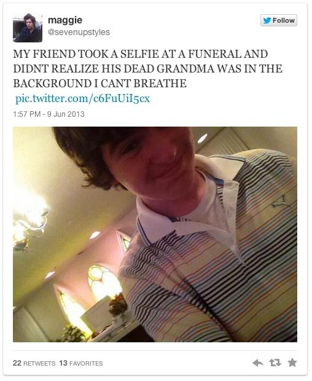
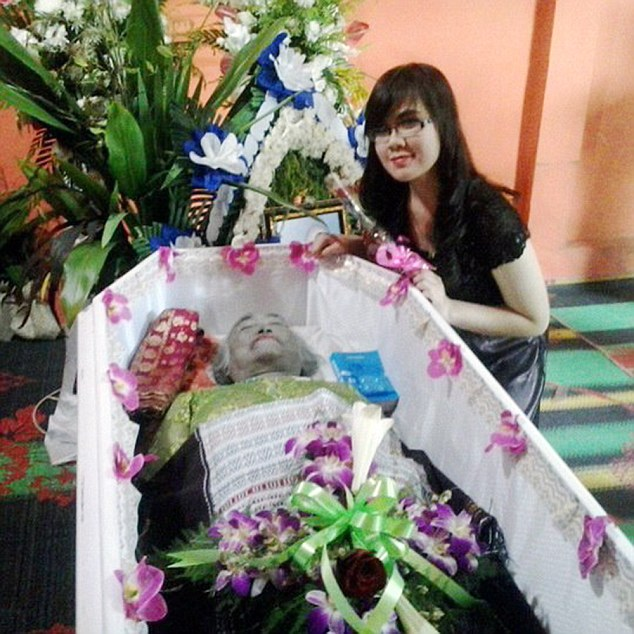
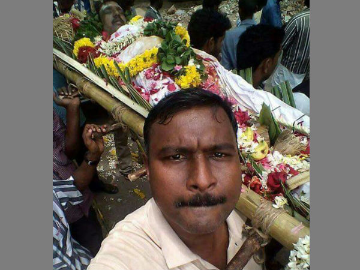
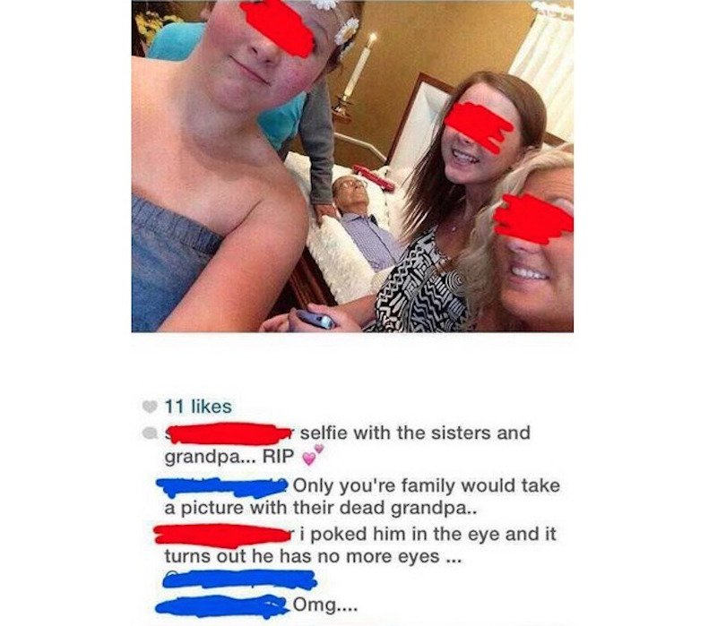
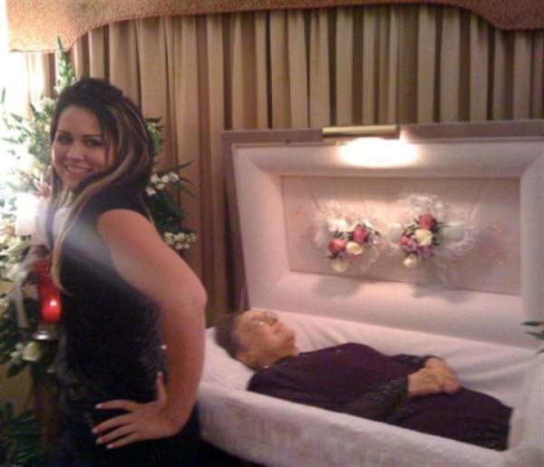
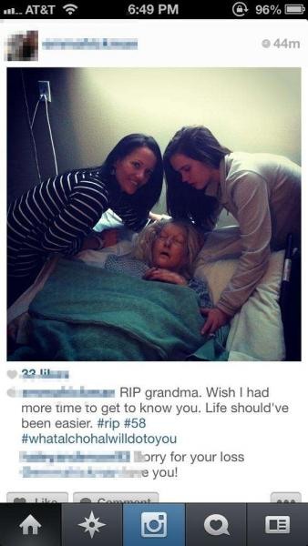
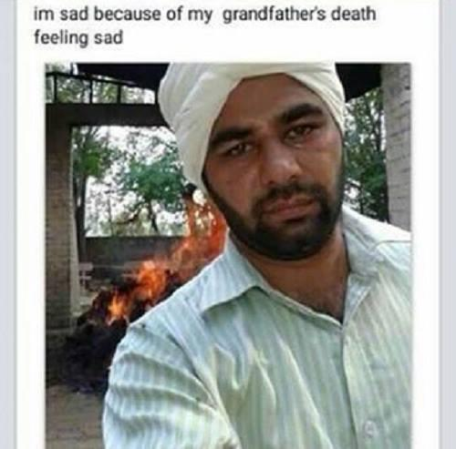
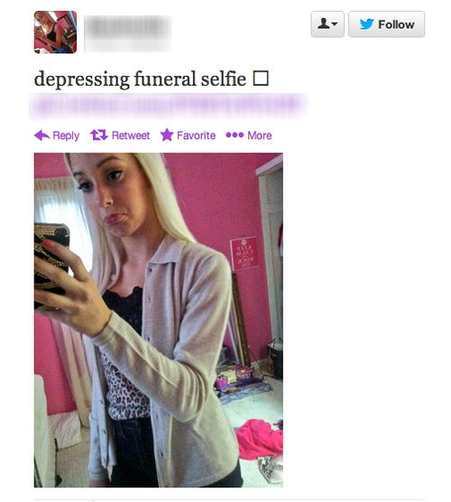
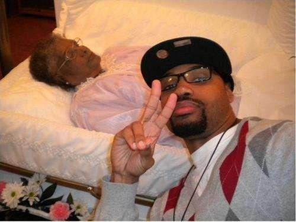

Selfies shared online




People that take pictures of themselves with their deceased beloved ones nowadays are being seen as sick and immoral. Though nothing really has changed in a few hundred years. The picture you take is the last proof of the existence of your beloved one.
The thing that did change is the step some people take next. They share their picture with the entire world to see.






Joie de vivre..